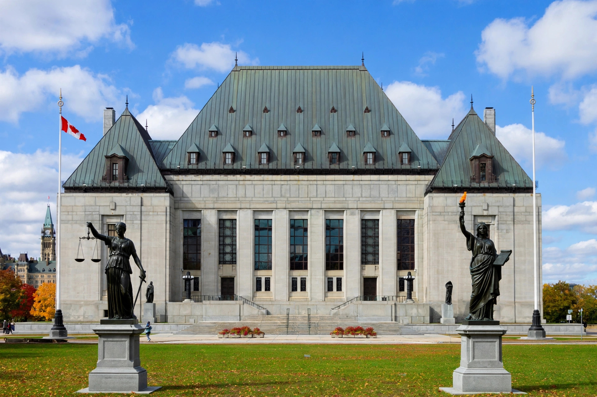

A reference question (in French, renvoi) is a procedure in Canadian law by which a government asks a court for an advisory opinion on an important question of law or fact, most often the constitutionality of proposed or existing legislation. At the federal level, section 53 of the Supreme Court Act authorises the Governor in Council (the federal Cabinet) to refer questions to the Supreme Court of Canada. Provincial governments have equivalent powers to refer questions to their provincial courts of appeal, whose answers may then be appealed to the Supreme Court.
Unlike ordinary litigation, a reference does not arise from a dispute between parties and the resulting opinion is technically advisory rather than binding. In practice, reference opinions are treated as authoritative statements of the law and are followed as if they were binding precedents. The Supreme Court retains a discretion to decline to answer a question that is too vague, political, or lacking a sufficient factual record. Interested parties and attorneys general of other provinces may intervene, and the Court may appoint an amicus curiae to argue positions no government wishes to advance — as it did in the Quebec Secession Reference, where lawyer Yves Fortier was appointed to represent the separatist position.
Famous federal references include the Persons case (Edwards v Canada (AG), decided by the Judicial Committee of the Privy Council in 1929), which held that women were "qualified persons" eligible for appointment to the Senate; the Patriation Reference (1981), which held that unilateral patriation of the Constitution was legal but contrary to constitutional convention; the Quebec Secession Reference (1998), which set out the principles governing a province's secession; the Same-Sex Marriage Reference (2004); the Senate Reform Reference (2014), which blocked most unilateral federal changes to the Senate; and the 2021 references on the federal carbon-pricing legislation. Provincial references are also common, notably in constitutional disputes over language rights and resource ownership. The mechanism contrasts with the practice of federal courts in the United States, which refuse advisory opinions under the case-or-controversy requirement of Article III.